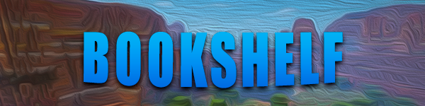
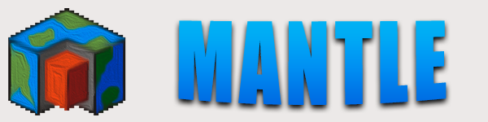
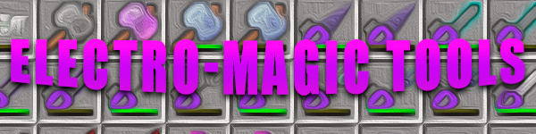

Для добавления модов, вы должны их искать на разных сайтах. Мы предоставляем вам возможность выбрать моды бесплатно. Вы можете выбрать нужную версию для поиска мода на нашем сайте.
Установить моды можно в 1 клик в нашем лаунчере. Скачать лаунчер можно на главной странице сайта.
Industrial Craft 2 [1.12.2] [1.7.10] [1.7.2]
Industrial Craft 2 - это большой мод, который дарит игроку множество работающих на электричестве механизмов для самых разных сфер игровой жизни, включая добычу руд, обработку ресурсов и управление сельским хозяйством.
Подробнее
ThaumCraft [1.12.2] [1.7.10] [1.7.2]
ТаумКрафт - это большой мод, который позволит вам изучать магию, он добавит в игру новые блоки, руны, чары и многое другое.
Подробнее
Galacticraft [1.12.2] [1.7.10] [1.7.2]
Galacticraft - это большой мод, который добавляет в игру космические ракеты, множество новых планет, гравитацию и многое другое.
Подробнее
Pixelmon [1.12.2] [1.7.10] [1.7.2]
Pixelmon - это большой мод, который добавить вам большое количество покемонов, они сделаны 3D моделью.
Подробнее
Not Enough Items [1.12.2] [1.7.10] [1.7.2]

Not Enough Items - это модификация, которая позволяет игроку быстро брать любой блок, смотреть рецепты крафта, быстро чаровать предметы и многое другое.
Подробнее
Morph [1.12.2] [1.7.10] [1.7.2]
Morph - это модификация, которая позволяет принять форму любого моба. Так же вы получаете способность моба(от летучий мыши, вы получите полет, а если вы зомби, то будете гореть на солнце) и многое другое.
Подробнее
Ice and Fire [1.12.2]
Ice and Fire - это большой мод, который добавляет в мир драконов. Есть 2 вида драконов - ледяные и огненные.
Подробнее
Superheroes [1.7.10]

Superheroes - это модификация, которая добавит супер силу, рефлексы, гаджеты, доспехи и многое другое.
Подробнее
Flans Mod [1.12.2] [1.7.10] [1.7.2]
Flans Mod - это модификация, которая добавит самолеты, автомобили, танки и многое другое.
Подробнее
Furniture [1.12.2] [1.7.10] [1.7.2]
Furniture - это модификация, которая добавит новые виды мебели для декорации в Майнкрафт многое другое.
Подробнее
BuildCraft [1.12.2] [1.7.10] [1.7.2]
BuildCraft - это модификация, которая добавит машины для добычи ресурсов, создание предметов и многое другое.
Подробнее
Tinkers Construct [1.12.2] [1.7.10] [1.7.2]
Tinkers Construct - это модификация, которая добавит новые инстремнты, блоки, руду и многое другое.
Подробнее
Forestry [1.12.2] [1.7.10] [1.7.2]
Forestry - это модификация, которая добавит новые виды деревьев, автоматические фермы и многое другое.
Подробнее
Custom NPC [1.12.2] [1.7.10] [1.7.2]
Custom NPC - это модификация, которая позволяет игроку создавать своего NPC и многое другое.
Подробнее
JEI [1.12.2]
JEI - это модификация, которая позволяет игроку быстро брать любой блок, смотреть рецепты крафта, быстро чаровать предметы и многое другое.
Подробнее
Decocraft [1.12.2] [1.7.10] [1.7.2]
Decocraft - это модификация, которая добавит новые предметы для декорации помещений.
Подробнее
Divine RPG [1.7.10]
Divine RPG - это модификация, которая добавит новых мобов, новые миры, блоки и многое другое.
Подробнее
Botania [1.12.2] [1.7.10] [1.7.2]
Botania - это модификация, которая добавит природную магию.
Подробнее
Applied Energistics 2 [1.12.2] [1.7.10] [1.7.2]
Applied Energistics 2 - это модификация, которая сосредоточена во круг энергии.
Подробнее
Baubles [1.12.2] [1.7.10] [1.7.2]
Baubles - это модификация, которая добавит дополнительные слоты в инвентаре.
Подробнее
Draconic Evolution [1.12.2] [1.7.10] [1.7.2]
Draconic Evolution - это модификация, которая добавит инструменты, броню, руду и многое другое.
Подробнее
Extra Utilities 2 [1.12.2] [1.7.10] [1.7.2]
Extra Utilities 2 - это модификация, которая добавит трубы, генераторы, магические вещи и многое другое.
Подробнее
TreeCapitator [1.12.2] [1.7.10] [1.7.2]
TreeCapitator - это модификация, которая добавит возможность быстро срубить дерево.
Подробнее
iChunUtil [1.12.2] [1.7.10] [1.7.2]
iChunUtil - это модификация, которая нужна для некоторых модов.
Подробнее
Blood Magic [1.12.2] [1.7.10] [1.7.2]
Blood Magic - это модификация, которая добавит магические элементы.
Подробнее
Lucky Block [1.12.2] [1.7.10] [1.7.2]
Лаки Блоки - это модификация, которая добавит блок, когда вы его сломаете, то выпадет случайный предмет.
Подробнее
Millenaire [1.12.2] [1.7.10] [1.7.2]
Millenaire - это модификация, которая добавит новые различные поселения.
Подробнее
TooManyItems [1.7.10] [1.7.2]
TooManyItems - это модификация позволяет выдать любой предмет, переключать режимы игры, менять погоду и очищать инвентарь.
Подробнее
Immersive Engineering [1.12.2] [1.7.10] [1.7.2]
Immersive Engineering - это модификация, которая добавит мезанизмы, руду и жителей с новыми домами.
Подробнее
TechGuns [1.12.2] [1.7.10] [1.7.2]
TechGuns - это модификация, которая добавит броню, руду, механизмы и многое другое.
Подробнее
Thermal Expansion [1.12.2] [1.7.10] [1.7.2]
Thermal Expansion - это модификация, которая добавит механизмы, руду и многое другое.
Подробнее
Thermal Dynamics [1.12.2] [1.7.10] [1.7.2]
Thermal Dynamics - это модификация добавит освещение для предметов.
Подробнее
Thermal Foundation [1.12.2] [1.7.10] [1.7.2]
Thermal Foundation - это модификация, которая добавит новые руды и предметы.
Подробнее
The Twilight Forest [1.12.2] [1.7.10] [1.7.2]
Сумеречный Лес - это модификация, которая добавит новый мир, мобов, предметы, боссы и многое другое.
Подробнее
Iron Chests [1.13.2] [1.12.2] [1.7.10] [1.7.2]
Iron Chests - это модификация, которая добавит сундуки с увеличенными слотами.
Подробнее
Smart Moving [1.12.2] [1.7.10] [1.7.2]
Smart Moving - это модификация, которая добавит анимацию персонажа во время бега, полета, плавания, а так же позволяет залезать на 2 блока.
Подробнее
Bookshelf [1.12.2] [1.7.10] [1.7.2]

Bookshelf - это мод, который нужен для других модов. Так же он добавляет новые виды брони для лошадей.
Подробнее
Thaumic Tinkerer [1.12.2] [1.7.10] [1.7.2]

Thaumic Tinkerer - это модификация, которая добавит новые блоки и предметы.
Подробнее
Ender IO [1.12.2] [1.7.10] [1.7.2]
Ender IO - это модификация, которая добавит машины, механизмы, генераторы, трубы и многое другое.
Подробнее
Portal Gun [1.12.2] [1.7.10] [1.7.2]
Portal Gun - это модификация, которая позволяет делать порталы как в игре Портал с помощьх которых можно перемещаться.
Подробнее
Mantle [1.12.2] [1.7.10] [1.7.2]

Mantle - это модификация необходимая для других модов.
Подробнее
Modern Warfare [1.12.2] [1.7.10] [1.7.2]
Modern Warfare - это модификация, которая добавит настоящий экшен в игру.
Подробнее
Cyclic [1.12.2]
Cyclic - это модификация, которая добавит множество интересных предметов и блоков.
Подробнее
Damage Indicators [1.12.2] [1.7.10] [1.7.2]
Damage Indicators - это модификация, которая позволяет увидеть здоровья моба или игрока.
Подробнее
Hwyla [1.12.2]
Hwyla - это модификация, которая позволяет увидеть название блока и мода, если навести на блок.
Подробнее
Waila [1.7.10] [1.7.2]
Waila - это модификация, которая позволяет увидеть название блока и мода, если навести на блок.
Подробнее
Comes Alive [1.12.2] [1.7.10] [1.7.2]
Comes Alive - это модификация, которая добавит возможность общаться с жителями деревень.
Подробнее
Journey Map [1.12.2] [1.7.10] [1.7.2]
Journey Map - это модификация, которая добавит удобную мини карту.
Подробнее
Inventory Tweaks [1.12.2] [1.7.10] [1.7.2]
Inventory Tweaks - это модификация, которая позволит быстро сортировать предметы в инвентаре или сундуке.
Подробнее
Enchanting Plus [1.12.2] [1.7.10] [1.7.2]
Enchanting Plus - это модификация, которая позволит удобно чаровать предметы.
Подробнее
RailCraft [1.12.2] [1.7.10] [1.7.2]
RailCraft - это модификация, которая добавляет рельсы, а так же поезда, которыми можно управлять.
Подробнее
Carpenter Blocks [1.12.2] [1.7.10] [1.7.2]
Carpenter Blocks - это модификация, которая добавит новые блоки в игру.
Подробнее
Ars Magica [1.7.10] [1.7.2]
Ars Magica - это модификация, которая добавит руду, броню, инструменты и многое другое.
Подробнее
CodeChickenCore [1.12.2] [1.7.10] [1.7.2]
CodeChickenCore - это модификация, которая необходима для некоторых модов.
Подробнее
CodeChickenLib [1.12.2] [1.7.10] [1.7.2]
CodeChickenLib - это модификация, которая необходима для некоторых модов.
Подробнее
Better FPS [1.12.2] [1.7.10] [1.7.2]
Better FPS - это модификация, которая улучшит FPS в игре.
Подробнее
BiblioCraft [1.12.2] [1.7.10] [1.7.2]
BiblioCraft - это модификация, которая добавит новую мебель для декорации.
Подробнее
Biomes O' Plenty [1.12.2] [1.7.10] [1.7.2]
Biomes O' Plenty - это модификация, которая добавит новые биомы, предметы и многое другое.
Подробнее
WorldEdit [1.12.2] [1.7.10] [1.7.2]
WorldEdit - это модификация, которая добавит возможность удобно редактировать мир.
Подробнее
Mo' Creatures [1.12.2] [1.7.10] [1.7.2]
Mo' Creatures - это модификация, которая добавляет 58 новых животных и монстров с воможность приручить их и ездить на них.
Подробнее
Ore Spawn [1.12.2] [1.7.10] [1.7.2]
Ore Spawn - это модификация, которая добавит новые миры, мобы, броню и многое другое.
Подробнее
Dragon Mounts [1.12.2] [1.7.10] [1.7.2]
Dragon Mounts - это модификация позволит выращивать драконов. Когда дракон вырастит появится возможность летать на нем.
Подробнее
Advanced Solar Panels [1.12.2] [1.7.10] [1.7.2]
Advanced Solar Panels - это модификация дополнение к моду IndustrialCraft 2, которая добавит новые солнечный панели.
Подробнее
Chisel 2 [1.12.2] [1.7.10] [1.7.2]
Chisel 2 - это модификация, которая добавит новые предметы для декорации.
Подробнее
Dynamic Lights [1.13.2] [1.12.2] [1.7.10] [1.7.2]
Dynamic Lights - это модификация улучшит освещение от факела, красного факела, светильников, если вы будете держать их в руке.
Подробнее
VoxelMap [1.13.2] [1.12.2] [1.7.10] [1.7.2]
VoxelMap - это модификация, которая добавит мини карту в игру.
Подробнее
Mekanism [1.12.2] [1.7.10] [1.7.2]
Mekanism - это модификация, которая добавит механизмы, руду и инструменты.
Подробнее
HarvestCraft [1.12.2] [1.7.10] [1.7.2]
HarvestCraft - это модификация, которая добавит различные инструменты для приготовления еды.
Подробнее
Redstone Flux [1.12.2] [1.7.10] [1.7.2]
Redstone Flux - это модификация, которая нужна для некоторых модов.
Подробнее
MalisisDoors [1.12.2] [1.7.10] [1.7.2]
MalisisDoors - это модификация позволяет делать тайные проходы.
Подробнее
Backpacks [1.12.2] [1.7.10] [1.7.2]
Backpacks - это модификация, которая добавит различные рюкзаки.
Подробнее
OpenBlocks [1.12.2] [1.7.10] [1.7.2]
OpenBlocks - это модификация, которая добавит различные новые блоки.
Подробнее
Electro-Magic Tools [1.7.10] [1.7.2]

Electro-Magic Tools - это модификация, которая добавит новые мезанизмы.
Подробнее
Gravitation Suite [1.12.2] [1.7.10] [1.7.2]

Gravitation Suite - это модификация, которая добавит новую броню.
Подробнее
Nuclear Control [1.12.2] [1.7.10] [1.7.2]
Nuclear Control - это модификация, которая добавит систему контроля для механизма.
Подробнее
Forge [1.13.2] [1.12.2] [1.7.10] [1.7.2]
Forge - это важная модификация, которая позволяет использовать моды.
Подробнее
Optifine [1.13.2] [1.12.2] [1.7.10] [1.7.2]
Optifine - это модификация, которая оптимизирует клиент, повышает FPS и добавляет поддержку HD текстур.
Подробнее